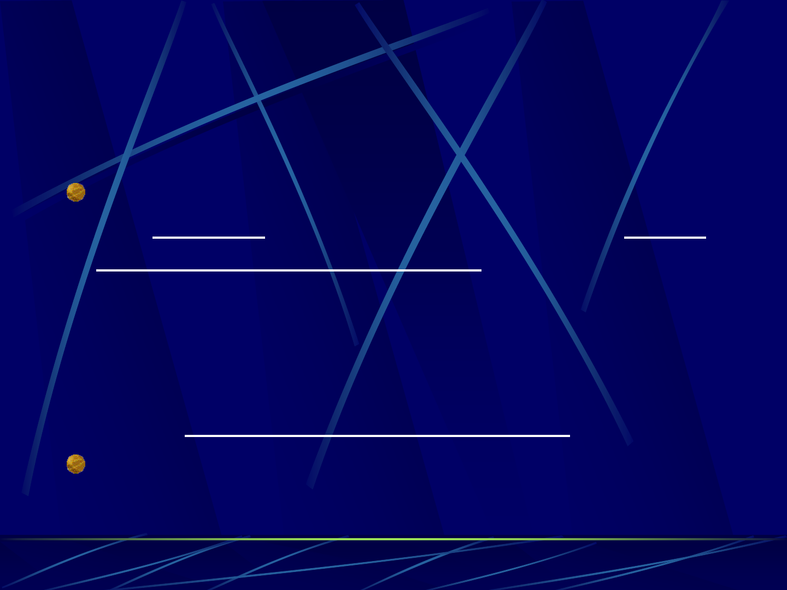

Begriffsbestimmung
INTRANET:
Ein Intranet ist ein Netzwerk auf der Basis
von Internet-Technologien (Netzwerk mit
TCP/IP, Kommunikation über EMail, Chat,
Diskussionsforum und Videokonferenz
sowie interner Web-Server mit
Datenbanken als Informationsquelle) für
einen definierten Anwenderkreis.
Nachaußenhinentstehtsomitein
geschlossenesNetzwerk.